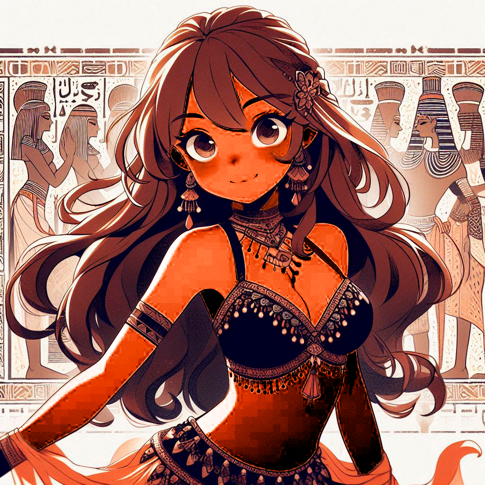

-
Bia * Ayla
Descrição
Bia, conhecida por algumas pessoas como Ayla, é praticante e professora de dança do ventre, esta dança que te encanta desde a sua infância. A dança te traz, a cada dia, novas experiências, te proporciona um aprendizado constante e permite também o desenvolvimento da sua autodescoberta. Reconhece as suas conquistas e dificuldades, e as transformam em aprimoramentos pessoais. Adora conhecer pessoas novas nas suas aulas, que também se encantam e se apaixonam pela dança do ventre, essas são as suas alunas, que deixam as aulas ainda melhores, com muitas risadas e trocas de conhecimento!
-
Pri
Descrição
Essa é a aluna Pri é uma pessoa super simpática e dedicada nas aulas. Costumamos usar roupas parecidas nas aulas, mesmo sem combinar. Fica maravilhosa vestindo o seu figurino branco, realçando o brilho do seu sorriso e olhar!
-
Jheni
Descrição
Essa é a aluna Jheni, também é uma pessoa muito simpática e dedicada nas aulas. Ela é meiga e um amor de pessoa. Fica explêndida vestindo o seu figurino branco, realçando ainda mais o seu brilho interior e exterior!
-
Kelli
Descrição
Essa é a aluna Kelli, também é um amor de pessoa. Tem uma energia tão boa, que é difícil não querer ter a sua amizade (e também é muito dedicada nas aulas). Fica deslumbrante vestindo o seu figurino preto, que realça ainda mais o seu brilho interior e exterior!
-
Nat
Descrição
Essa é a aluna Nat, uma pessoa simpática e educada. Esforçada e também muito dedicada e amigável. Fica linda vestindo o seu figurino azul que realça a cor dos seus olhos e de seus cabelos!
-
Pat
Descrição
Essa é a aluna Pat, educação e simpatia em pessoa, sempre correndo atrás das aulas perdidas, ela não desiste fácil, sua dedicação é admirável. Fica belíssima vestindo o seu figurino preto com detalhes em laranja, realçando ainda mais a sua beleza!
-
Thais
Descrição
Essa é a aluna Thais, com o seu jeitinho amigável de ser, está sempre se esforçando e buscando se aprimorar cada vez mais. Também é bem dedicada nas aulas e fica encantadora vestindo os seus figurinos lilás e azul, que realçam ainda mais a sua beleza!